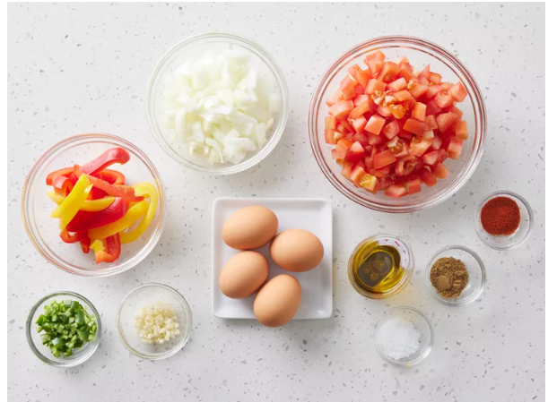

Shakshuka, where all roads lead to goodness
Get ready for an exciting new recipe that will tantalize your taste buds!
Get ready for an exciting new recipe that will tantalize your taste buds!
Discover the fascinating history behind this dish and its cultural significance.
In case you have any hesitations, a sharp knife is a kitchen safety tool, since most experienced chefs will tell you that the most serious injuries they saw was with a not so sharp knife that slips!!!!
Watch how this recipe is prepared step by step!
Don't forget to check out more recipes and videos for great cooking tips!